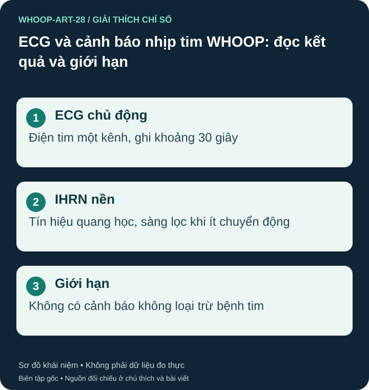

Hai chức năng có cách hoạt động khác nhau
ECG chủ động ghi hoạt động điện tim khoảng 30 giây. Hồ sơ FDA K243236 mô tả ECG phiên bản 1.0 một kênh, tương tự chuyển đạo I; không tương đương điện tim 12 chuyển đạo ở cơ sở y tế. S52

Irregular Heart Rhythm Notifications, viết tắt IHRN, dùng tín hiệu quang học PPG để sàng lọc dấu hiệu gợi ý rung nhĩ khi ít hoặc không chuyển động. Đây không phải ECG liên tục và không quan sát mọi thời điểm. Không có cảnh báo không loại trừ rung nhĩ gián đoạn. Phạm vi FDA K243236 của ECG không tự áp dụng cho IHRN. S43 S57 S52
Ai có thể sử dụng?
Hướng dẫn WHOOP nêu thiết bị MG, gói Life, từ 22 tuổi và thị trường đủ điều kiện. ECG cần tiếp xúc điện cực/phụ kiện tương thích; không khuyến nghị cho người có máy tạo nhịp, ICD hoặc thiết bị điện tử cấy ghép, và có giới hạn với loạn nhịp đã biết khác AFib. IHRN không dành cho người đã chẩn đoán AFib. Không gộp hai bộ điều kiện thành một. S42 S43
Danh sách khu vực được lập chỉ mục và đối chiếu ngày 26/10/2026 chưa liệt kê Việt Nam cho ECG/IHRN. Đây là ảnh chụp thông tin nguồn, không phải xác nhận trực tiếp tài khoản hoặc quy định tại Việt Nam. Kiểm tra danh sách hiện hành và ứng dụng ở vị trí thực tế. S44
Hiểu các nhóm kết quả
Normal Sinus Rhythm là phân loại trong lần ghi; AFib là dấu hiệu cần trao đổi y tế. Low/High Heart Rate không tự chẩn đoán nguyên nhân nhịp chậm/nhanh. Hồ sơ ECG 1.0 còn phân biệt Inconclusive, tức không kết luận được, với Unsuccessful Reading, tức ghi thất bại. Cả hai không phải kết quả bình thường. Tên hiển thị và giới hạn phân loại có thể khác theo phiên bản và khu vực. S52 S42
Khi không có triệu chứng nặng và bản ghi lỗi, làm theo hướng dẫn: đeo cổ tay, giữ yên, tiếp xúc đúng và đo lại khi phù hợp. Với IHRN, hướng dẫn nêu vị trí đã kiểm định là cổ tay; không mặc định đeo bắp tay cho kết quả tương đương. Nếu có cảnh báo hoặc kết quả gợi ý AFib, lưu báo cáo và trao đổi y tế; không đo lặp chỉ để tìm một lần bình thường. S42 S43
ECG/IHRN không phát hiện nhồi máu cơ tim hoặc mọi bệnh tim. Đau ngực, khó thở nhiều, ngất hoặc triệu chứng nặng cần trợ giúp khẩn cấp, kể cả khi lần đo báo nhịp xoang. Không tự bắt đầu hay dừng thuốc từ kết quả này. S42 S43
Nguồn tham khảo và phạm vi hỗ trợ
- S42 — WHOOP Support. ECG: Data Accuracy & Best Practices. Phạm vi: ECG theo yêu cầu khoảng 30 giây; MG/Life, >=22 tuổi, giới hạn thiết bị cấy ghép, phân loại, không phát hiện nhồi máu.
- S43 — WHOOP Support. Irregular Heart Rhythm Notifications: Data Accuracy & Best Practices. Phạm vi: Sàng lọc nền lúc ít chuyển động; >=22 tuổi; không dành cho người đã chẩn đoán AFib; khác ECG chủ động.
- S44 — WHOOP Support. Regional Feature Availability. Phạm vi: Khả dụng theo thị trường; không suy ra Việt Nam được bật từ trang Hoa Kỳ.
- S52 — U.S. Food and Drug Administration. WHOOP ECG Feature (1.0): FDA 510(k) K243236. Phạm vi: Hồ sơ 04/04/2025 cho ECG 1.0 ở Hoa Kỳ: một kênh tương tự Lead I, spot check 30 giây, >=22 tuổi, kết quả Inconclusive khác Unsuccessful Reading; không mở rộng sang IHRN/BPI/thị trường khác.
- S57 — WHOOP, Inc. — Apple App Store. WHOOP App — Intended Purpose and Safety Information (UK listing). Phạm vi: Thông tin do WHOOP công bố: IHRN phân tích pulse-rate data từ cảm biến PPG; sàng lọc cơ hội khi đủ dữ liệu, >=22 tuổi, không khuyến nghị cho người đã biết AFib. Không phải xác nhận tính khả dụng tại Việt Nam.
Bài biên soạn độc lập bởi Pulse & Vitality; tài liệu WHOOP và các nguồn khác được dùng để tham khảo. Đăng ngày 2026-10-27; nguồn đối chiếu 2026-10-26. Nội dung giáo dục, không thay thế đánh giá, chẩn đoán hoặc điều trị y tế.